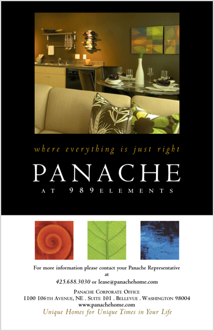
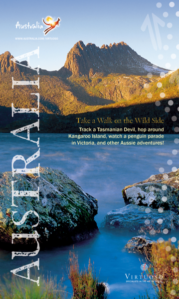
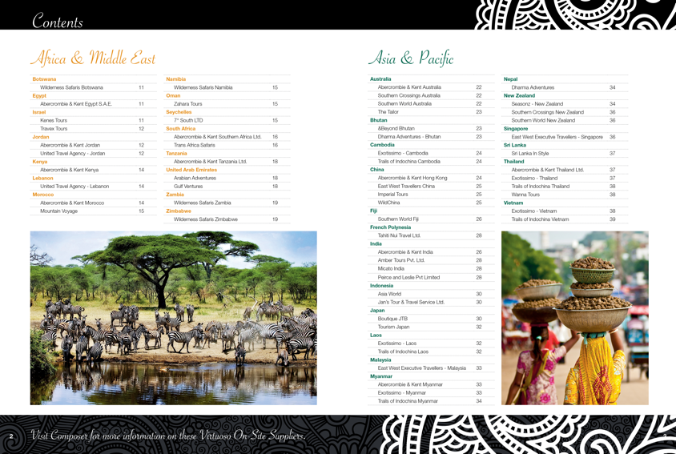
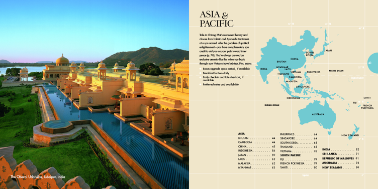
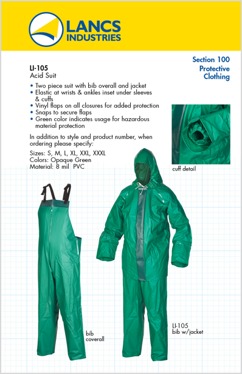
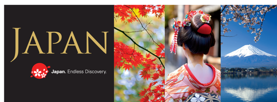
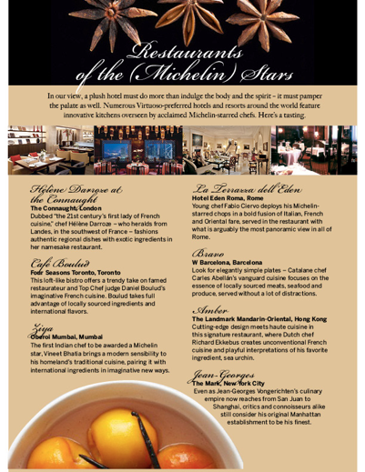
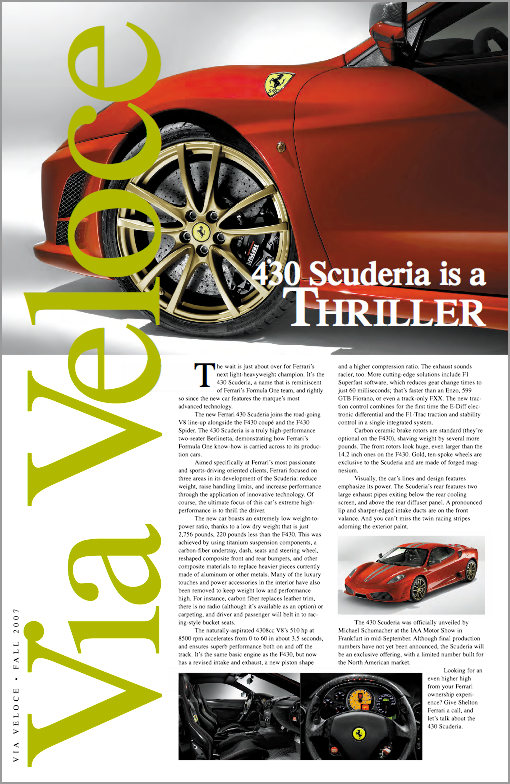

Design, Print, Production
I created the brand name which is for a collection of high-end rental properties for short-term lease. This is one of several inserts in a die-cut cover that serves as a portfolio of properties.

This is the cover of a direct mail booklet for Australia Tourism.

This is the spread for one of the contents pages for a 48-page travel catalog. I have extensive experience with InDesign, especially for multi-page documents where master pages and paragraph styles help to facilitate efficent workflow.

This one of 9 breaker spreads for a 500+page hotel directory. The semicircle to the right is a colored tab for that section of the directory. Each section has its own color so that the reader knows what part of the world they’re in.

This is one of 60+ pages of a product catalog that is housed in a 3-ring binder so that as new products were added, the customer updated their binder with the new sheets. I designed the company's brand and art directed all the photography for over 500 products. Those suits may not be fashionable but they keep workers frombeing exposed to hazardous or radioactive materials.

This is an email header for Japan Tourism. I love sourcing images and love putting together images to convey a story.

Within catalog work I have designed editorial pages. This article highlights some Michelin-starred restaurants and the star anise image at the top gives a visual play on the word "stars."

I created the name for this newsletter for a Maserati and Ferrari dealership. Images from the corporate offices are just outstanding and I really enjoyed doing this quarterly newsletter.